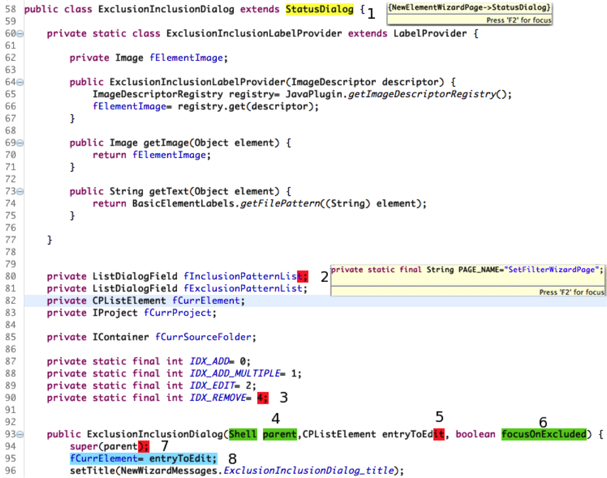

CSeR - A Code Editor For Tracking & Visualizing Detailed Clone Differences
Download
Thesis, Tex Thesis, Slides, Tex Slides
We have presented an approach for clone management by tracking CnP (Copy and Paste) operations. By making use of this approach detailed differences between clones is
available with in the editor. The changes are visualized in different colors for easy understanding. The comparison used is context-sensitive and AST based.
In the Figure on right,
the change marked "1" and is categorized as others in the update change type. The change marked "2" and "3" shows deletion of 3 fields from the class. The deleted fields can be seen on hovering the mouse near the marker, it is shown in the Figure for change "2". Similarly "7" corresponds to the deletion of two statements. Change "8" corresponds to a move operation, The changes "4", "5","6" corresponds to parameter changes, "5" indicates deletion of two parameters while "4", "6" are marked in
green showing that they are newly inserted parameters.

CSeR editor view
{kind=link}